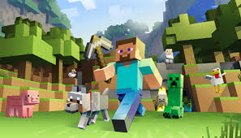

Roblox
Creat de Radu David
2 Decembrie 2025

Roblox este o platformă de jocuri online și un sistem de creare de jocuri dezvoltat de Roblox Corporation, care permite utilizatorilor să programeze și să joace jocuri create de ei înșiși sau de alți utilizatori.
A fost creată de David Baszucki și Erik Cassel în 2004 și lansată publicului în 2006.
În februarie 2025, platforma a raportat o medie de 85,3 milioane de utilizatori activi zilnic.
Potrivit companiei, baza lor lunară de jucători include jumătate din totalul copiilor americani sub vârsta de 16 ani.
Minecraft
Creat de Radu David
13 Decembrie 2025

Minecraft este un joc sandbox dezvoltat și publicat de Mojang Studios.
Lansat oficial pe 18 noiembrie 2011 pentru computere personale, după lansarea sa inițială public alpha pe 17 mai 2009, a fost portat pe numeroase platforme, inclusiv dispozitive mobile și diverse console de jocuri video.
Ultrakill
Creat de Radu David
21 Decembrie 2025

Ultrakill este un joc de tip first-person shooter, dezvoltat de Arsi „Hakita” Patala și publicat de New Blood Interactive.
A fost lansat pe Steam prin early access pentru Windows pe 3 septembrie 2020.
Jocul folosește grafică în stil retro care amintește de jocurile video de pe primele console PlayStation și combină mecanici de mișcare moderne, precum cele din Titanfall și Doom Eternal, cu elemente de gameplay din jocuri de acțiune precum Devil May Cry.